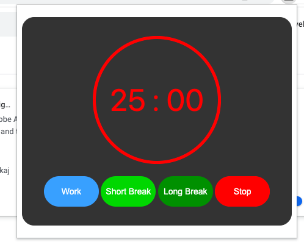

MP-1 Writeup
Overview and Usage:
Pomogranate is a Pomodoro timer that keeps you focused on your work by showing you pomegranates every time you open a social media site.
How to use this extension:
Open link below > Code button > Download ZIP > Open .zip file in files/finder > Go to Google Chrome and type chrome://extensions > Toggle Developer Mode to be ON > Load unpacked > Select "pomogranate-extension-main" > Click puzzle icon in top right toolbar > You're ready to use Pomogranate!
Click here to access the GitHub link
Development Process:
1. I created a GitHub folder for my extension with a README file
2. I cloned the GitHub folder and opened it in VS Code
3. Created a manifest.json file for the Chrome extension
4. Created Content.js to block specific websites when accessed
5. Created popup.js and popup.html to create the Pomogranate extension popup with the timers
6. Added favicon and icons of different sizes
7. Commited changes to GitHub

Issue Deep-Dive: Description of an issue you ran into, and the steps you took to resolve it
One issue I encountered at the beginning was not being able to start the timer when I first loaded the extension.
Ideas and Future Work:
- Change fonts of the extension to something beyond a simple Sans Serif
- Create an animated background to use as the site blocker (i.e. a spinning pomegranate animation?)
- Release extension to the Chrome store
Kudos:
https://www.youtube.com/watch?v=dIrXIJ781DQ
https://freshman.tech/first-chrome-extension/
https://www.w3schools.com/cssref/playdemo.php?filename=playcss_background-size&preval=cover
https://www.freecodecamp.org/news/css-button-style-hover-color-and-background/
https://github.com/GoogleChrome/chrome-extensions-samples/tree/main/examples/water_alarm_notification